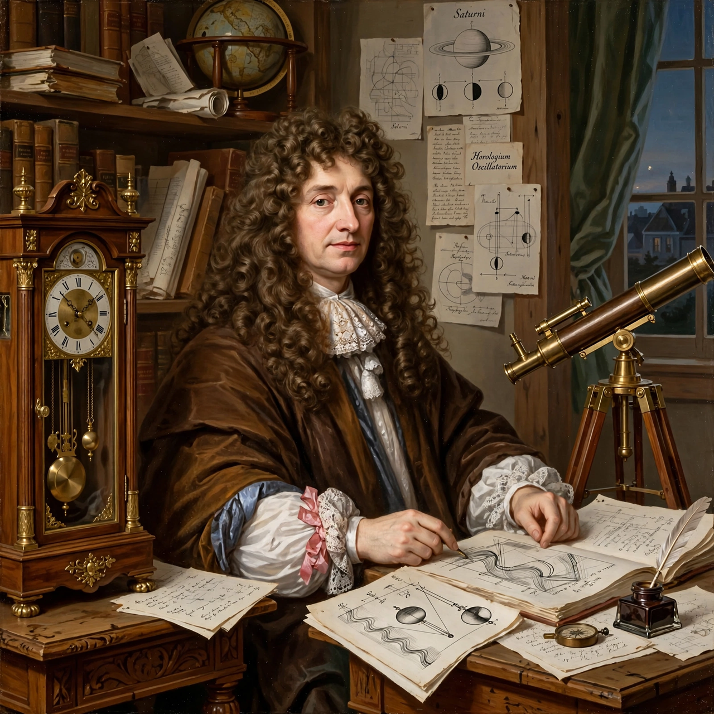

| Born | April 14, 1629 The Hague, Dutch Republic |
|---|---|
| Died | July 8, 1695 (aged 66) The Hague, Dutch Republic |
| Alma mater | Leiden University; University of Angers |
| Known for | Huygens principle; pendulum clock; discovery of Titan; wave theory of light |
| Fields | Physics, astronomy, mathematics, horology |
Christiaan Huygens (April 14, 1629 – July 8, 1695) was a Dutch mathematician, physicist, astronomer, and inventor, widely regarded as one of the greatest scientists of the Scientific Revolution. He founded the wave theory of light, invented the pendulum clock, and discovered Saturn's largest moon, Titan.
In his Traité de la Lumière (1690) Huygens proposed that light is a wave propagating through an aether, and stated Huygens' principle: every point of a wavefront is itself the source of secondary wavelets, whose envelope forms the new wavefront. The principle explained reflection and refraction geometrically; later extended by Fresnel (the Huygens–Fresnel principle) to account for diffraction, first described by Grimaldi.
With improved telescopes of his own grinding, Huygens identified Titan in 1655 and correctly explained Saturn's rings as a thin flat ring in Systema Saturnium (1659). His Horologium Oscillatorium (1673) derived the mathematics of the pendulum — including the cycloidal path for isochronism — and of centrifugal force, and he built the first pendulum clock in 1656, revolutionizing timekeeping. He also wrote an early treatise on probability, De ratiociniis in ludo aleae (1657).
NASA and ESA named the Huygens probe that landed on Titan in 2005 in his honour.
Categories: 1629 births | 1695 deaths | Dutch physicists | Dutch astronomers